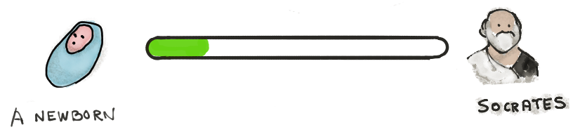
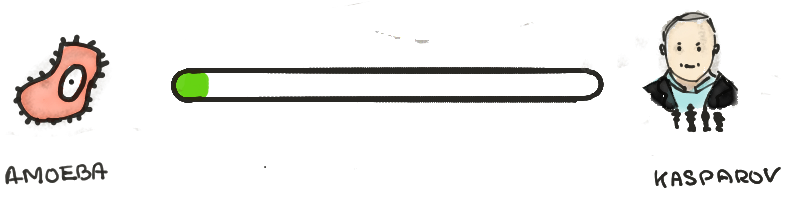
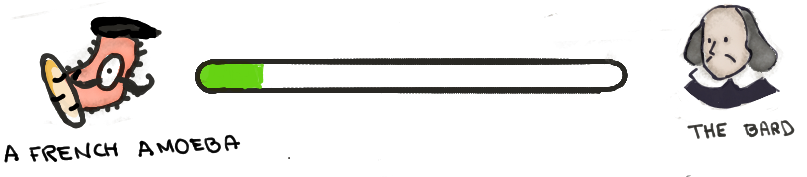
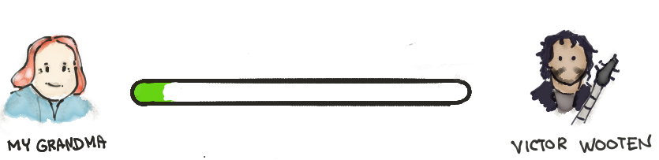

Mes niveaux de pouvoir
Tellement de choses cool à apprendre et si peu de temps... Il faut donc prioriser.
Et nous l’avons fait ! Comment ? En choisissant une petite liste de domaines auxquels nous allons nous consacrer pendant ce 2019.
Mais...
D’autres trucs cool qu’on aimerait apprendre
Tu trouveras dans cette liste des domaines que nous souhaiterions -aussi- apprendre -on t’a déjà dit qu’on adore apprendre ?-, mais qui n’ont pas était sélectionnés, car moins prioritaires.
Ce sont donc des domaines secondaires dans notre chemin d’apprentis eternels et il s’agit, bien entendu d’une liste personnelle.
En espérant pouvoir un jour avoir suffisamment du temps à leur consacrer, nous les partageons pour l’instant avec toi. Tu trouveras également une estimation -encore une fois, personelle- du niveau de Mr.Bee dans ces différents domaines.
Voilà voilou, Happy learning!




Ta liste ?
Et toi ? Quels sont tes domaines prioritaires ? Et les secondaires ? A tu fais ta liste d’apprentissage ?
Si ce n’est pas le cas, nous t’invitons donc à la faire.
Sans une carte, tu n’arriveras jamais à la destination
Nous t’invitons aussi à évaluer où tu en es par rapport à tes expectatives !
Tu peux -si tu le souhaites ainsi, bien évidemment 😉- partager cette liste dans les commentaires !